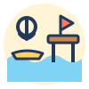
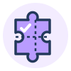
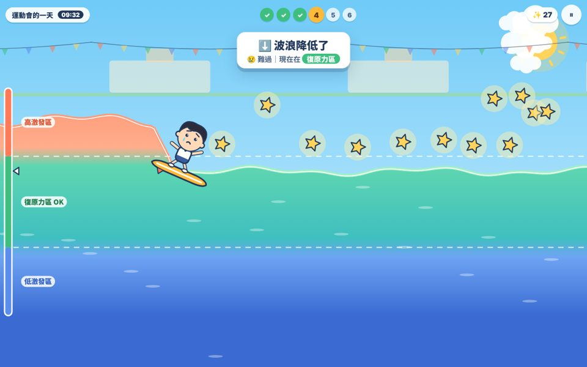

教師說明
學生乘著代表情緒激發程度的「OK 曲線」衝浪，在校園一天的六個事件中練習辨識情緒、覺察身體訊號，並選用調節策略，回到可以思考與行動的狀態。
國小 4–6 年級適用年級
1 節課 40 分教學時間
7–10 分鐘每人玩 1 個故事
免安裝・免登入電腦、平板、手機瀏覽器
單元單元資訊
單元名稱：OK 曲線衝浪：我的校園一天 學習領域：社會情緒學習（SEL），可融入綜合活動、健康教育
SEL 核心能力：自我覺察、自我管理、人際技巧、負責任的決定 分組：個人或兩人一組；不需輸入任何個人資料
目標學習目標
辨識情緒
說出自己在事件中的情緒，理解同一件事每個人的感受可以不同。
覺察身體訊號
連結情緒與心跳、呼吸、肩膀等線索，判斷自己在哪一個區域。
選用調節策略
操作至少一種調節技能，並評估它對自己有沒有幫助。
做出合宜行動
在挑戰、衝突或意外中，選擇尊重、安全的回應，並清楚地求助。
玩法遊戲玩法
高激發區
能量很多：興奮、期待，也可能是緊張、生氣。高激發不等於壞情緒。
復原力區 OK Zone
還能思考、學習、和別人互動。復原力不是一直開心。
低激發區
能量變少：失落、累、想躲起來。低激發不等於失敗。
每個故事有 6 個事件，每個事件這樣進行：
1
閱讀情境部分事件有衝浪挑戰，做不好不扣分2
選情緒與身體訊號情緒單選、身體訊號可複選3
波浪變化情緒精靈先接納感受4
調節技能自己決定要不要用，用完自評5
選擇行動看到同學或老師的回應呼吸光圈
光圈變大時按住吸氣、變小時放開吐氣，完成 3 次。

安全港停靠
按住煞車慢慢靠港，再選身體部位與休息方式。
支持浮島
選支持者，組出「打招呼＋感受＋需要的幫忙」的求助句。

想法拼圖
把過度概括的想法，拼成比較平衡的說法。

運動會的一天
挫折團隊合作接力賽掉棒、同學反應不同，練習面對失誤。

考試的一天
壓力自我接納遇到不會的難題、對答案比較，練習調整策略。
校外教學的一天
人際互動尋求支持小組意見不合、與隊伍走散，練習安全求助。
玩完會產生「我的 OK 曲線」：六個事件的情緒曲線、紀錄與復原力工具卡，可存成 PNG。不以情緒高低或是否待在綠色區評分。
畫面遊戲畫面



教學教學方式（40 分鐘）
8 分
引起動機
在黑板畫一條起伏的線，介紹三個區域；示範遊戲操作。
「你最近什麼時候心跳很快？那時是開心還是緊張？」
20 分
遊戲體驗
學生自選 1 個故事玩完；老師巡視，協助操作與閱讀。
「你選了哪個技能？為什麼想試它？」
12 分
分享總結
小組對照彼此的 OK 曲線；每人寫下 1 個「下次想試的方法」。
「同一個事件，為什麼大家的曲線不一樣？」
教學提醒
- 情緒數值只是遊戲模擬，不是心理測驗，不用曲線比較或評分學生。
- 強調「每種感受都可以被接納」；復原力是能慢慢回到可以應對的狀態。
- 若學生持續顯示強烈的不舒服，請私下關心，並視需要轉介輔導老師。
- 需要安靜環境的學生，可開啟「降低動畫」或關閉音效；也可用數字鍵選擇。